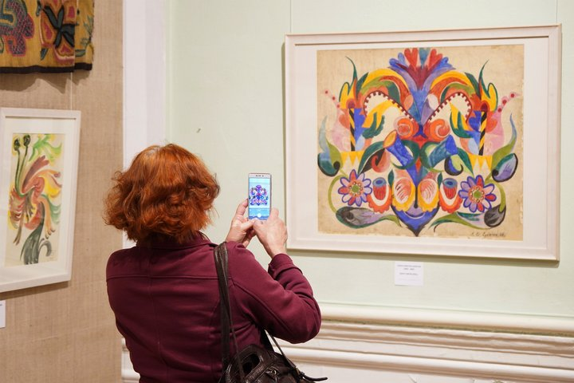
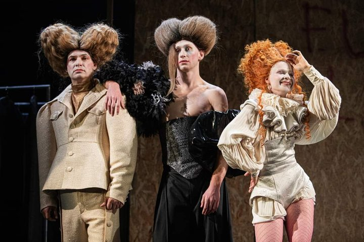
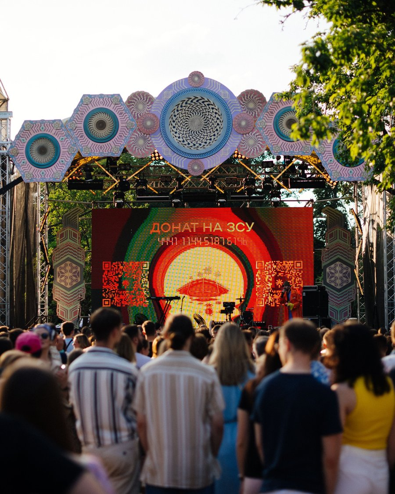
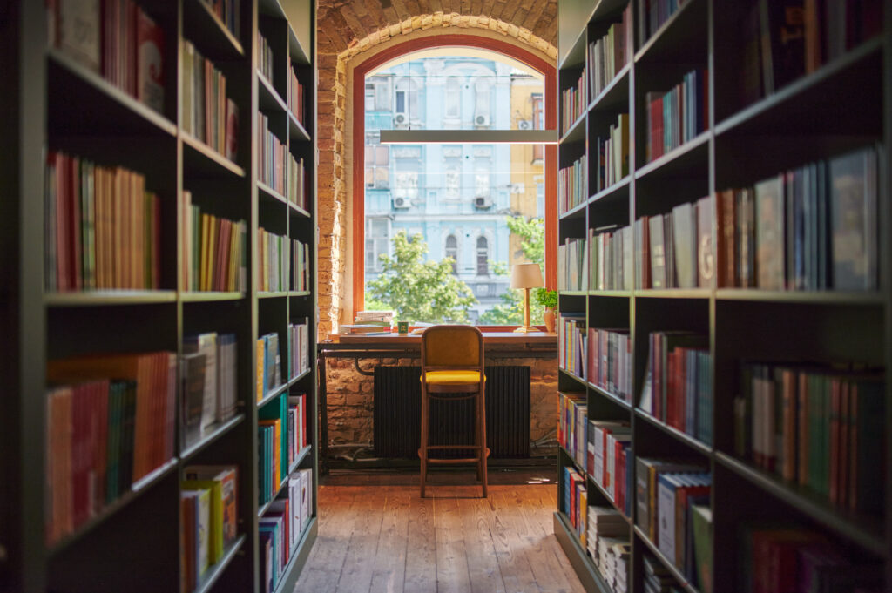
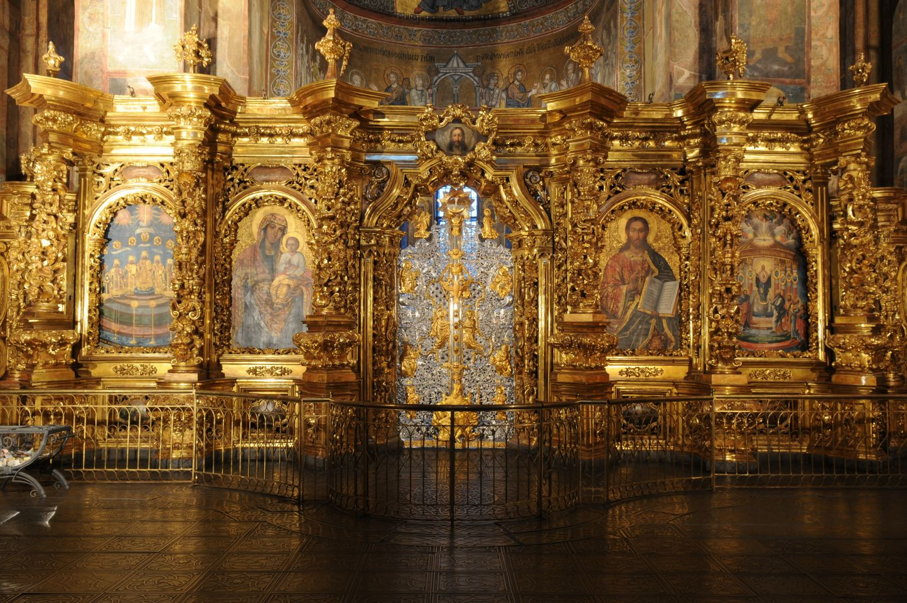

1. Відкриття нової виставки сучасного мистецтва в Києві

У Національному художньому музеї відкрилася експозиція українських авангардистів. На виставці представлено понад 50 унікальних робіт.
Автор: Олена Петрів

У Національному художньому музеї відкрилася експозиція українських авангардистів. На виставці представлено понад 50 унікальних робіт.
Автор: Олена Петрів

Режисер представив сучасне прочитання класичної п'єси. Квитки на найближчі покази вже повністю розпродані.
Автор: Іван Мельник

Цими вихідними відбудеться щорічний фольклорний фестиваль за участю виконаців з усіх куточків України.
Автор: Олена Петрів

Відомий історик випустив фундаментальне дослідження про заснування та розбудову історичних районів міста.
Автор: Diana Schmid

Фахівці завершили перший етап збереження унікальних пам'яток XVI століття. Експозиція буде доступна з наступного тижня.
Автор: Олена Петрів